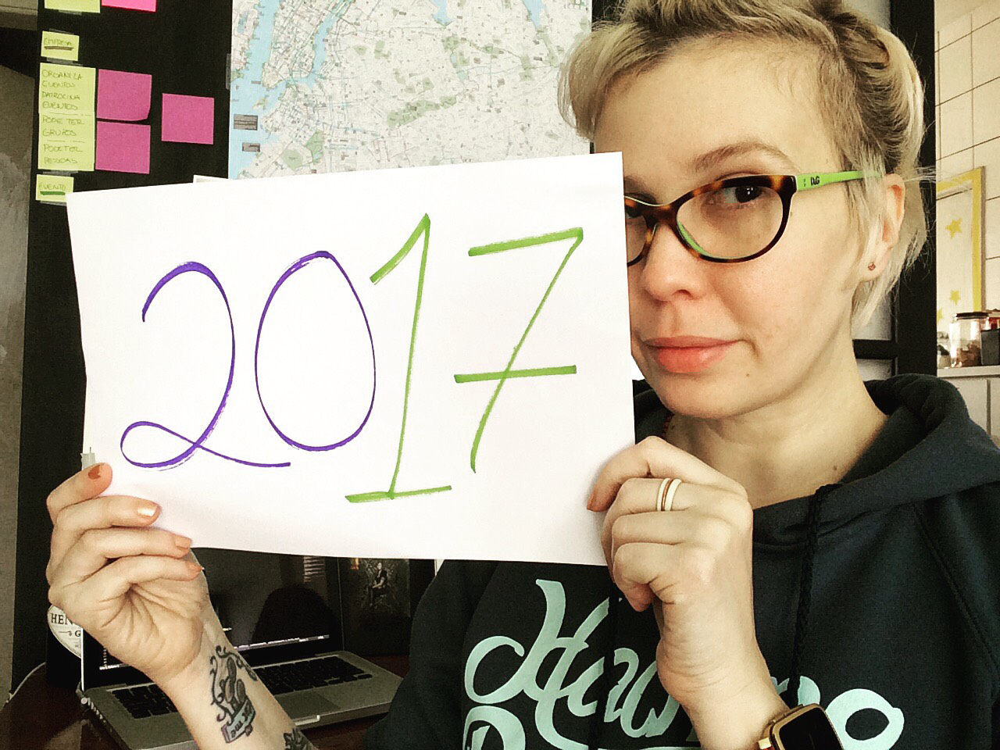
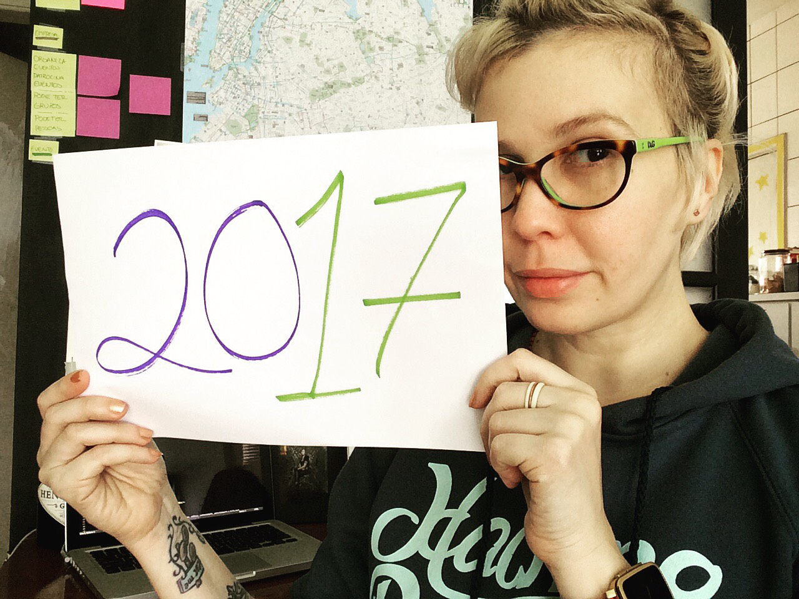

Alda Rocha @mjcoffeeholick
Senior UX consultant, UX Designer e Web Developer
"Meu sonho é levar a tecnologia para as minorias, até não ter mais minorias!"
 

2016 ta acabando, que tal planejar 2017?
Você tem um evento e quer que eu palestre nele? AGORA É A HORA!
Preenche esse form pra gente se organizar.
Agenda 2016/2017
Eventos que vão acontecer e vou palestrar
- 2016
- #rdsummit
Resultados Digitais
02 de DEZEMBRO - Florianópolis/SC
Palestra: Sobre ser mulher em TI
Vou falar sobre como é ser mulher em TI e como podemos nos manter fortes, unidas e motivadas!
- 2016
- #RailsGirlsRS
Rails Girls SC
02 e 03 de DEZEMBRO - Florianópolis/SC
Palestra: Vamos falar sobre mulheres no mercado de TI?
Pretendo falar na minha palestra como superar cada uma dessas barreiras, mostrar como é essencial o trabalho de front-end, UX e programação no mercado hoje. Vou falar também como fazer parte de tudo isso fazendo o empoderamento ser muito mais que uma palavra e sim uma realidade no dia a dia de cada mulher.
Startup Weekend São Paulo Women
04 de DEZEMBRO - São Paulo/SP
Palestra: Vamos falar sobre mulheres no mercado de TI?
Pretendo falar na minha palestra como superar cada uma dessas barreiras, mostrar como é essencial o trabalho de front-end, UX e programação no mercado hoje. Vou falar também como fazer parte de tudo isso fazendo o empoderamento ser muito mais que uma palavra e sim uma realidade no dia a dia de cada mulher.
Rails Girls SP
09 e 10 de DEZEMBRO - São Paulo/SP
Palestra: Empoderei, e agora?
Pretendo falar na minha palestra como superar cada uma dessas barreiras, mostrar como é essencial o trabalho de front-end, UX e programação no mercado hoje. Vou falar também como fazer parte de tudo isso fazendo o empoderamento ser muito mais que uma palavra e sim uma realidade no dia a dia de cada mulher.
Campus Party 2017
31 de JANEIRO a 5 de FEVEREIRO - São Paulo/SP
Palestra: GitHub como aliado no front-end
Como usar o controle de versão em seus projetos, no design e no web desenvolvimento.
2016
Eventos que já aconteceram e palestrei
Code Girl
Natal/RN
Palestra: Bora pro front!
Pretendo falar na minha palestra como superar cada uma dessas barreiras, mostrar como é essencial o trabalho de front-end, UX e programação no mercado hoje. Vou falar também como fazer parte de tudo isso fazendo o empoderamento ser muito mais que uma palavra e sim uma realidade no dia a dia de cada mulher.
Webbr 2016
São Paulo/SP
Palestra: Desmistificando UX
Vamos entender o que é UX. Como aplicamos dentro de um projeto, entender todas suas etapas e quais são seus entregáveis.

Rubyconf BR
São Paulo/SP
Palestra: Empoderei e agora?
Palestra de 45 minutos abordando a maioria das dificuldades enfrentadas pelas mulheres na área de TI e incentivando que elas continuem lutando para fazer parte deste cenário.


Front in Vale
Vale do Paraíba/SP
Palestra: Empoderei e agora?
Palestra de 45 minutos abordando a maioria das dificuldades enfrentadas pelas mulheres na área de TI e incentivando que elas continuem lutando para fazer parte deste cenário.

Front in BH
Belo Horizonte/MG
Palestra: Empoderei e agora?
Palestra de 45 minutos abordando a maioria das dificuldades enfrentadas pelas mulheres na área de TI e incentivando que elas continuem lutando para fazer parte deste cenário.
UX
Palestras, textos e aulas sobre UX
W3C - Webbr2016
Entrevista - São Paulo/SP
Batepapo: Desmistificando UX
Até onde a experiência do usuário realmente é importante para definir o que pode ou não ser aplicado em um app ou mobile? Vamos entender como tipos de de celulares e interfaces podem estragar ou encantar o usuário e ser crucial para o sucesso de um produto.
Alura Curso - Microcopy
Vídeo Aula - São Paulo/SP
A influência do microcopy na experiência do usuário
Faça esse curso e... Melhore a experiência de seu usuário, aprenda a criar formulários simples, crie títulos e frases de apoio, entenda como o microcopy influência a experiência do usuário, diferenças entre micro copy e copywriting
GDG WTM Sorocaba
Hangout - Sorocaba/SP
Batepapo: Experiêcia do Usuário
No encontro de fevereiro o Women Techmakers Sorocaba vai ter a oportunidade de assistir uma apresentação sobre Experiêcia do Usuário e bater um papo com a Alda Rocha, especialista em UX e desenvolvedora front-end.
GDG Recife
Hangout - Recife/PE
Batepapo: Devo me importar com UX em mobile?
Até onde a experiência do usuário realmente é importante para definir o que pode ou não ser aplicado em um app ou mobile? Vamos entender como tipos de de celulares e interfaces podem estragar ou encantar o usuário e ser crucial para o sucesso de um produto.
7Masters
São Paulo/SP
Design Responsivo: Não interessa, eu quero responsivo!
Alda Rocha é UX designer, web desenvolvedora e front-end. Neste 7Masters ela falou sobre a abordagem do responsivo na visão agência x cliente. O que fazer quando o cliente quer um layout responsivo? Onde os problemas começam?
Podcast
Entrevistas e programas gravados


Mulheres e tecnologia
Um pouco mais sobre eventos e causas para apoiar
Webbr 2016 W3C Brasil
São Paulo/SP
Painel: Empoderamento Feminino na Web
Painel Empoderamento Feminino na Web com Alda Rocha, Carine Roos, Tássia Spinelli, Luciana Heuko e Bárbara Paes. Crédito foto: Marco Estrella
Revista Donna
São Paulo/SP
Entrevista: Mulheres na TI
Porque a tecnologia da informação ainda é uma área para poucas?
Ctrl Zeta
São Paulo/SP
Mãe e Desenvolvedora! UX Designer com Alda Rocha
Durante o WoMakersCode que rolou em São Paulo, encontramos a Alda Rocha, faixa preta em bravura e descobrimos como ela veio, viu e venceu!
Mulheres Exatas
São Paulo/SP
Woman's Workshop: Entrevista Alda Rocha
Nosso evento foi construído com o foco em não apenas trazer mulheres pra área mas também formar uma comunidade para futuramente criar projetos e outros eventos.
Tem um evento ou grupo voltado para mulheres em tecnologia (qualquer tecnologia)?
Tem Interesse em fazer mentoria ou prefere aprender alguma coisa?
Bio e outras redes
Caso precise entrar em contato
"Consultora e instrutora de Usabilidade, UX/UI designer, Web desenvolvedora, front-end, formada em arquitetura da informação com mais de 16 anos de experiência. Além de desenvolvedora, é engajada nas causas femininas e tecnológicas. Foi coordenadora de plataformas e soluções de TI na IOT Lab, web Designer e Designer gráfico. Desenvolveu projetos para muitas marcas consolidadas no Brasil e no mundo, agência digitais, startups e grandes empresas. Foi organizadora do Google Developers Group SP, Hackathon da FIESP e mentora do Women Techmakers no Brasil. Criou o GDG DROPS, evento que visava incentivar mais mulheres na área de tecnologia. Participou do Hackathon da Rede Globo. Já palestrou em vários eventos de tecnologia. Em seu tempo livre gosta de escrever sobre mulheres na tecnologia, design, usabilidade, experiência do usuário. Estuda Astronomia e Aquitetura Romana."
Se você precisa falar comigo ou quer me convidar para palestrar,